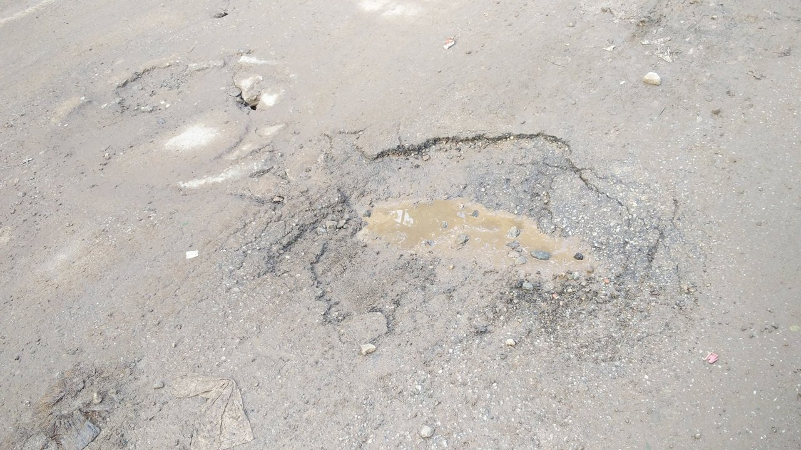
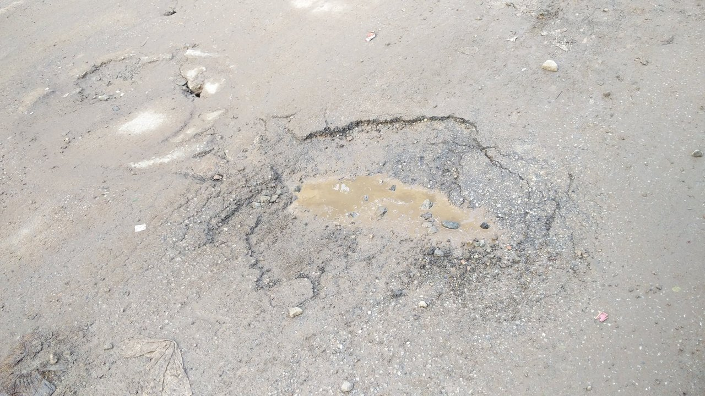
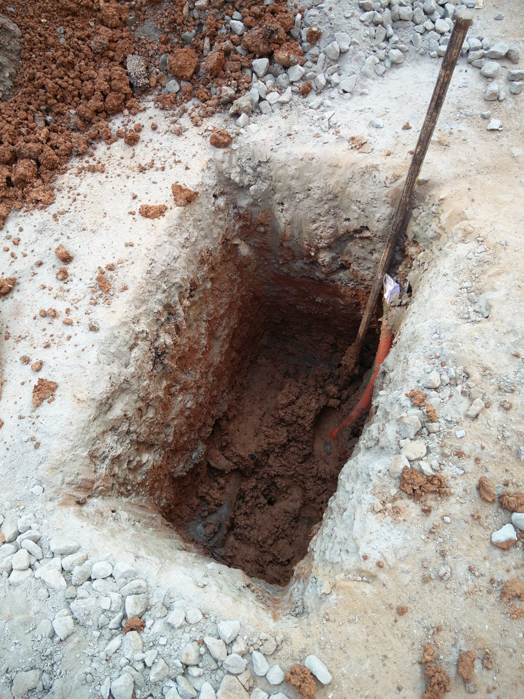
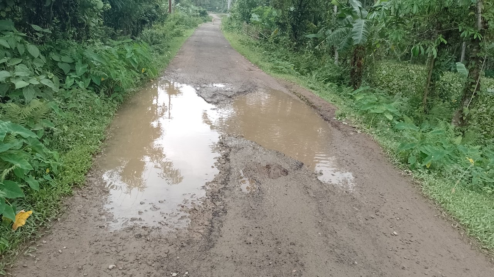

1,482
Total Potholes Tagged
⚡ Real-time Telemetry
420
Road Scenes Analyzed
🟢 Bengaluru Municipal Fleet
189
Critical Hazards
⚠️ Urgent Work Order Sent
742
Moderate Surface Damage
📊 Scheduled for Resurfacing
Sample Bengaluru Municipal Road Datasets:
Click any sample to run instant CV diagnosis

Munnekollala Main Road
Critical Risk
Bengaluru East

HAL Old Airport Road
High Risk
Bengaluru East

Bellandur Ring Road
Trench Subsidence
ORR Corridor

Hosur Road Surface
Medium Hazard
South Bengaluru
Selected Scene
Ready for OpenCV contour and Canny edge segmentation
📷 Segmented Computer Vision Telemetry
Execution: 42ms
Detected Road Distress Hazards
0 Found
Processing road surface with OpenCV edge contours & segmentation...
Select any Bengaluru road sample above or upload your own road image to view real-time pothole segmentation and severity tagging.